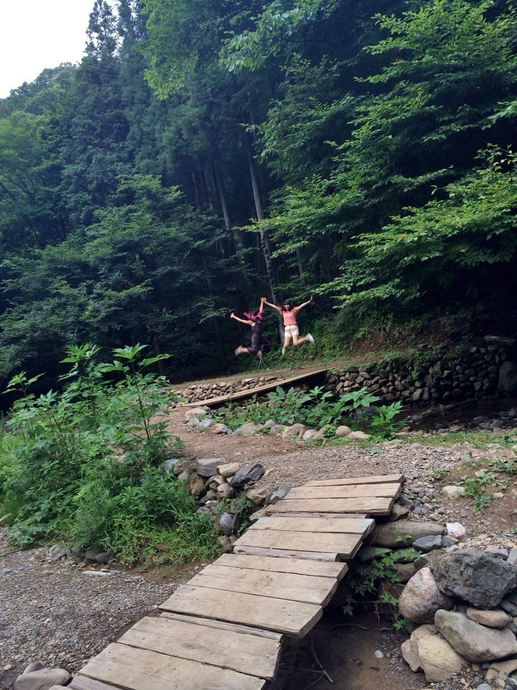
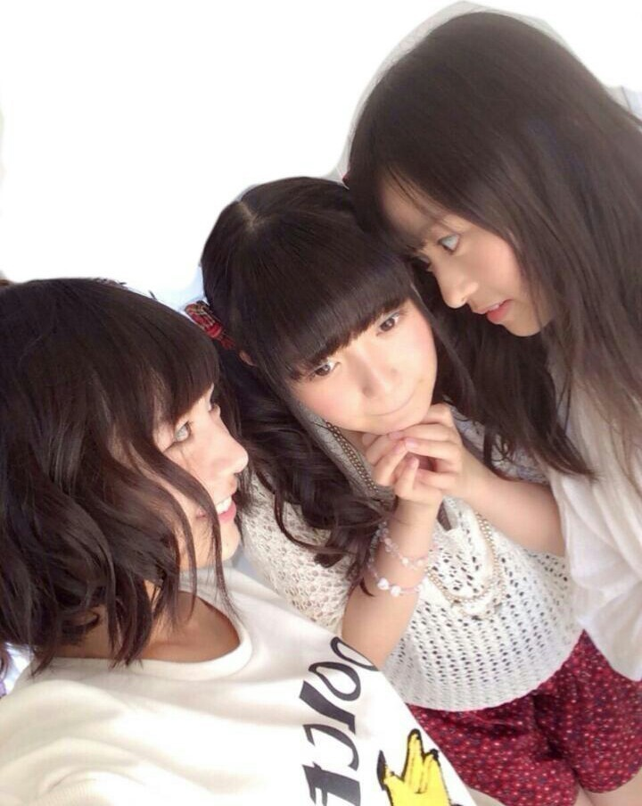
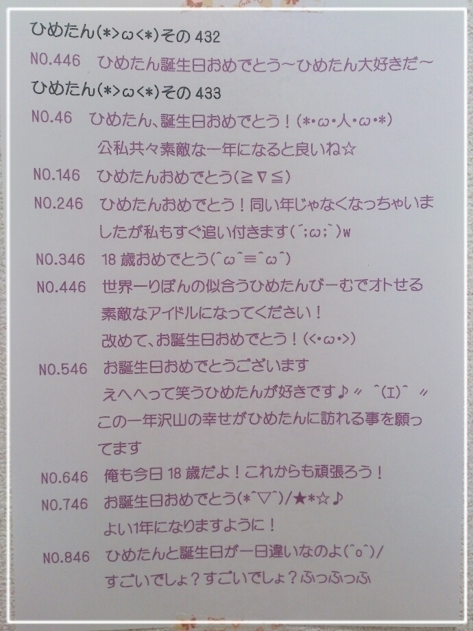

| 2014/08 21 Thu | ひめたん-OoO-その471 |
ニュースで報道されている自然災害
広島のみなさん大丈夫ですか？
私の家族は無事です
心配してくださったみなさん
本当にありがとう( ˘ω˘ )
亡くなった方のご冥福を御祈り致します
そしてひとりでも多くの方が救われますように。

乃木どこのルス告回は
みなさん観ていただけましたか(＊'v'＊)♡
前回はほんとにたくさんコメントあって
嬉しくてひゃーって思いながら読んでたけど
中でもルス告の感想がほんとに多かったな～＊
それだけみなさんに
楽しんでいただけたみたいで
よかったです///きゃ
実際あれ考えるの難しかったなあ
ほんとに家電にあんなルス告入ってたら
ぼーいずは嬉しいのかしら
おにゃーのこのみんなも
あんな電話かけたりするのかなー(ノ)ω(ヾ)？
勇気がでないよーって子は
ぜひ妄想だけでも
電話かけて楽しんでみてね♡
来週も観てくださいなっ
そしてのぎ天はJapan Expo回！

へなちょこなわりに
レポートがんばってみたよー(´-ω-｀)
いつもはどうぞどうぞのひめたんも
このときは頑張ってみたつもりだよー
でもまだまだだよー難しいよー
乃木坂ちゃんのライブを観ること
あんまないから
なんだか不思議な気持ちというか。
サイリウム持ったらテンションあがるね！
ファンのみなさんからの目線も体験しつつ
魅せ方とか意識しなきゃなーと
アーティストとしてもお勉強になりました
それからみなさん
今回のでわかっていただけたと思います
ひめたんびーむは世界共通(<・ω・>)
幸せな茶番として
乃木どこさんに認定していただけたしね♡
次回ののぎ天は
新アンダーメンバーでキャンプ！
自然の中できゃっきゃうふふしてきたよー

次回の乃木ののは
斉藤優里ちゃん
大和里菜ちゃん です☆
あ、そうそう言い忘れてたけど
前回の放送できいちゃんのときの
「まだブログに載せてないニュース」でやった
タイトルコールは
ひめたんによる平泉成さんの物真似でした(´;o;`)
だってきいちゃんなんだもん！笑
きいちゃん→ひめ←まりか

明日は全国ツアー福岡公演！
玲奈さんとななみんが
おやすみなのが残念ですが
みんなですてきなライブにしたいと思います☆
行くよーってみなさん
一緒に楽しい時間を過ごしましょう～＊
よろしくお願いします( ^O^ )
福岡は1年ぶりですねー
福岡では握手会やイベントが
ほとんど行われないので
普段は会いに来てもらってばっかりだけど
明日は私たちが福岡のみなさんに
会いにいくよ∩´ω`∩ぱやぱや～
地元から一番近い会場でもあります
ひゃー楽しみ！

 ひめたん推しではないんですけど
ひめたん推しではないんですけど
最近の姫が可愛すぎて推し変しそうです。
どうすればいいですか？笑
きゅんきゅん王国＼(^o^)／かもーん
楽しい国だよ～
みんなやさしいしみんなきゅんきゅん力高いし
なによりひめがこんなだからきっと楽しいよ～
たんひめがドMに目覚めたのは
いつくらいの時期？
だーから違うってばあー(｀・ω・´)
ひめたん、ここ最近 急に
可愛くなった気がするんだけど、
おでこ出す予定はないの？
近々、かなちょっと先かな
みなさんにおでこを披露するときが
きてしまったようです......はうう
乃木ののにメールおくりたいんだけど
件名にコーナー名かけばいいの？
そうだよー
めーる送るときってわくわくするんだね！
身をもって体感したよ♡
おたよりお待ちしてます∪´ω`∪
もうちょっとでひめたん推しです。
頑張ってください。
あとどれくらい頑張ったら届くのかしら
MAXが100だとしたら
あといくつくらいで100になるのかしら
ひめたんが好きな香りってなに？
バニラ！
ハンドクリームもフレグランスも
バニラです(〃ω〃)
爽やかなのよりもちょっと甘ったるいのが好き♡
前回2枚同じの貼っちゃったーごめんねー
教えてくれたひとありがとう！
そして
前回貼るはずだった3枚目の写メ
次回貼ります(´・ω・｀)
ひめたんの日記の
コメント欄下２ケタに46を踏んだ方へ
手書きでコメ返するコーナー
＼ ひめたん46 ／


お誕生日の時のコメ返。
ほんとにたくさんの方からのメッセージ
ありがとうございました(＊^ω^＊)
神聖なるひめのお誕生日の時に46を踏んだ
ラッキーなみなさんに向けて
まとめてお返事したのでぜひ読んでくださいな
いつもたくさんのコメント
ありがとうございます♪
乃木どこのルス告を受け取った先輩が
いっぱいいた⊂( ˆoˆ )⊃♡
僕には私にはかかってきてないぞーってひと！
恥ずかしくてかけるかどうか迷ってるから
もうちょっと待っててね......なーんて。
めーるいっぱい待ってるって
みんなに言ってもらえて
よかった安心した～＊
そんなこと言ったら
ばしばし送ってやるんだから♡
(＊´・ω・＊)
コメント(712)
2014/08/21 00:00